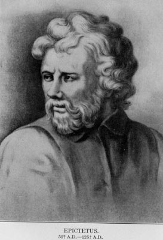
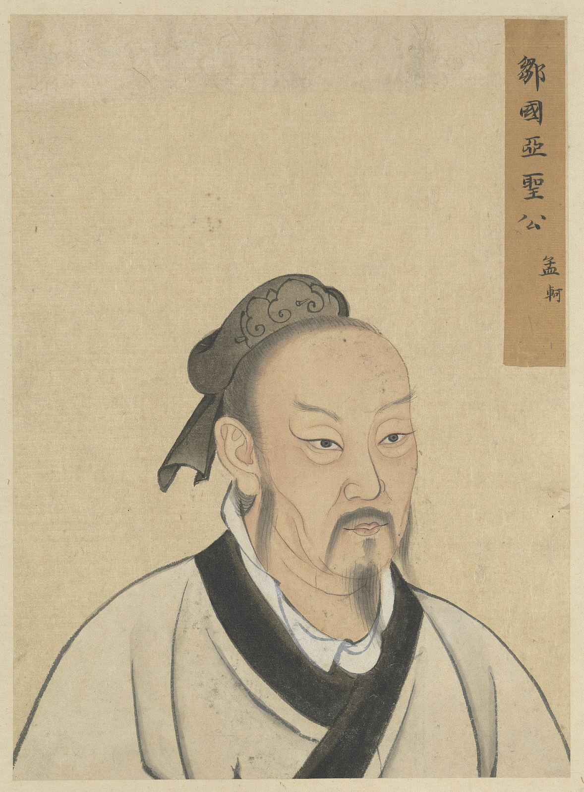

My Cause
Philosophy Matters!
Philosophy is without a doubt one of the oldest and most important subjects. Philosophy was originally defined by the Greeks as a love for knowledge. Philosophy began as a quest for understanding the world around us. We owe our thanks to philosophy for the creation of sciences like physics and mathematics. Ancient philosophers in the far east like Mencius pioneered concepts like piety and duty to ones family while western philosophers like Epictetus stressed the importance of moderation and impartiality.


Epictetus is pictured on the left and Mencius on the right
In our modern age, philosophy has come to lose its power. Many students do not learn or take a class in philosophy until college. Ancient philosophers like Socrates believed that the most just society would be one ruled by a philosopher king. How do we revere these people for their knowledge yet we do not act upon their advice. Paulo Freire, a more contemporary philosopher, stressed the importance of teaching critical thinking as opposed to just empty facts in his book Pedagogy of the Oppressed. I believe it is important that we challenge ourselves and take heed to the words of Socrates, "Know thyself". Through reflection on self we can better relate to the world around us and we must teach our children critical thinking so that they push society forward.
Here are some educational links for philosophy